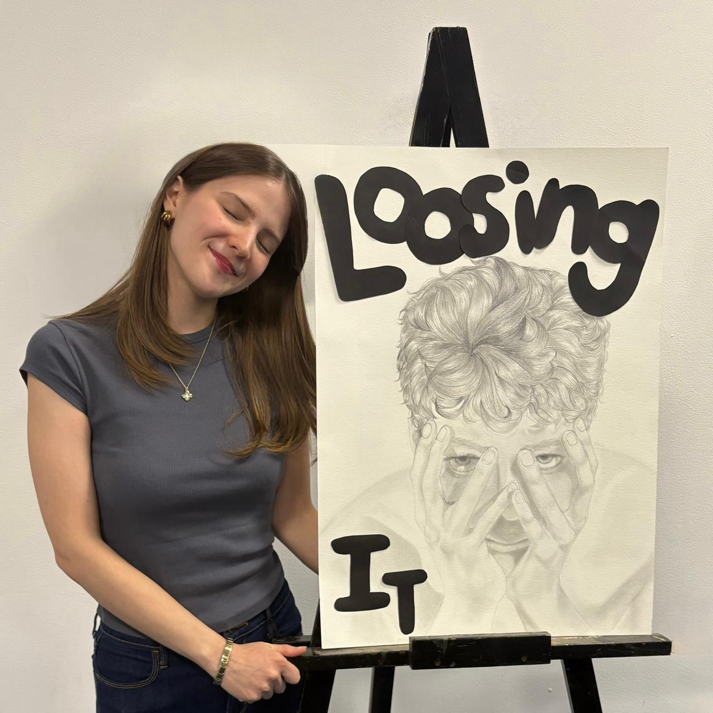

PORTFOLIO
Mariana Islas Mondragón


Hello!
I am Mariana Islas a designer that is passionate about creating visual experiences that
communicate with intention.
I have participated in educational, cultural, and digital
projects, where design stands out for its aesthetics, clarity, and ease of use.
I love
combining creativity with logic, always striving for each project to make an impact and create a genuine
connection with people.
